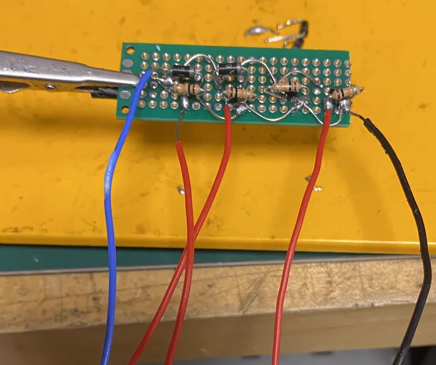
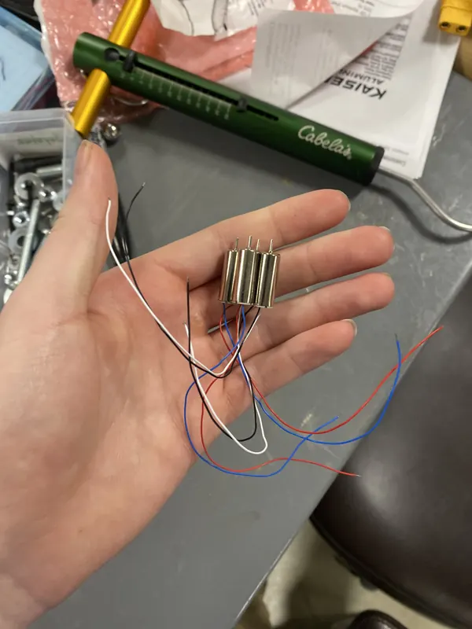
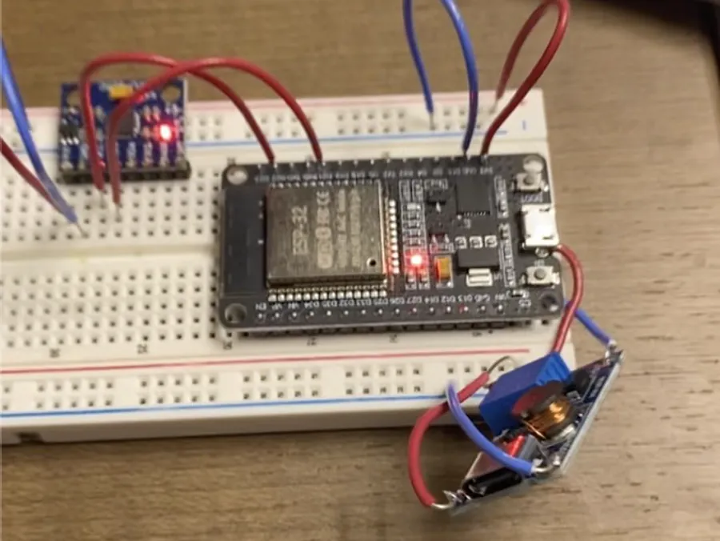
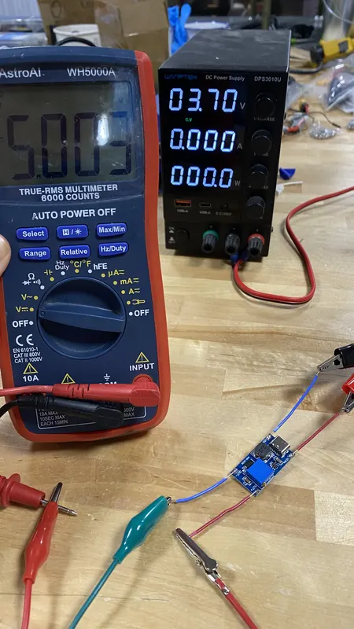

ESP32 Quadcopter
A small quadcopter built from scratch for about $60 in parts. I wanted to own every layer of it once, from the frame to the motor driver, the wireless link and the flight control code.
- ~$60in parts
- 1S, 80 mAhbattery
- 0dropped packets on the first wireless test

Frame
This was the first part I modeled in SolidWorks from a blank file, without a tutorial telling me the next step. I learned to build the arms and body so one dimension could change without breaking the rest, and to work out clearance for the motors and wiring before modeling instead of after. I checked the frame with FEA and printed it in PETG, with settings tuned so the arms survive a rough landing without carrying extra material.
Motor driver and wireless link
Motor driver
Each motor is switched by an AO3400 N-channel MOSFET driven by a PWM pin on the ESP32. The ESP32 drives the gate at only 3.3 V, so the MOSFET has to switch fully on at that voltage. A half-on MOSFET acts like a resistor and turns the motor current into heat.
The AO3400 starts to conduct at a gate voltage of about 1 V and is rated at under 48 mΩ with only 2.5 V on the gate, so 3.3 V turns it fully on. At 0.5 A per motor that resistance costs about 12 mW and drops about 24 mV, which is nothing next to the motor.
Each motor also has a flyback diode across it. A motor winding is an inductor, and an inductor resists any sudden change in current. When the MOSFET switches off, the current has to go somewhere, and without the diode the voltage spikes until something breaks. The diode gives that current a safe loop. Gate resistors slow the switching edges slightly so the gate doesn't ring.
I pulled the parts from the CWRU circuits lab bins and soldered the board by hand. I had only just learned to solder, and the surface mount MOSFETs took a lot of retries to get clean joints without bridging pins.




Wireless link
The IMU data streams over ESP-NOW to a second ESP32 on the ground. ESP-NOW lets two ESP32s talk directly over the Wi-Fi radio without a router, using only the receiver's MAC address. I wrote the Arduino firmware to read the IMU, pack the data and send it, and the link worked on the first real test with no dropped packets.
I later reused the same link for the EMG robotic hand.




Thrust and the battery
Measured on the bench.
Before assembly I weighed every part and set a thrust to weight target of 2:1. Below about 2:1 a drone has too little margin to recover from a disturbance, because hover already takes half the throttle.
Each motor tested fine on its own. With all four running, the pack voltage sagged and the motors couldn't get the current they needed.
A LiPo can only deliver about its capacity times its C rating in amps before its internal resistance drags the voltage down. The pack is a single 80 mAh cell, so even at 25C it can supply only about 25 × 0.08 = 2 A, roughly 0.5 A per motor with all four running. One motor was inside the original pack's limit, but four at once went past it, which is why testing one motor at a time could never have shown the problem.
I traced it to the C rating, fitted a 25C pack and ran the test again, and four motor thrust then cleared the 2:1 target.
Attitude control
The flight controller is a PID loop I wrote in Arduino. It compares the attitude from the IMU with the attitude it should hold. The proportional term pushes back in proportion to the error, the integral term removes small errors that persist, and the derivative term damps the correction so it doesn't overshoot.
Before risking a free flight, I mounted the drone on a three axis gimbal and tuned the gains by hand while the loop drove it through real angles. A gimbal holds the drone in place and adds friction and inertia, so it shows the loop responding but doesn't prove free flight. Free flight is next.